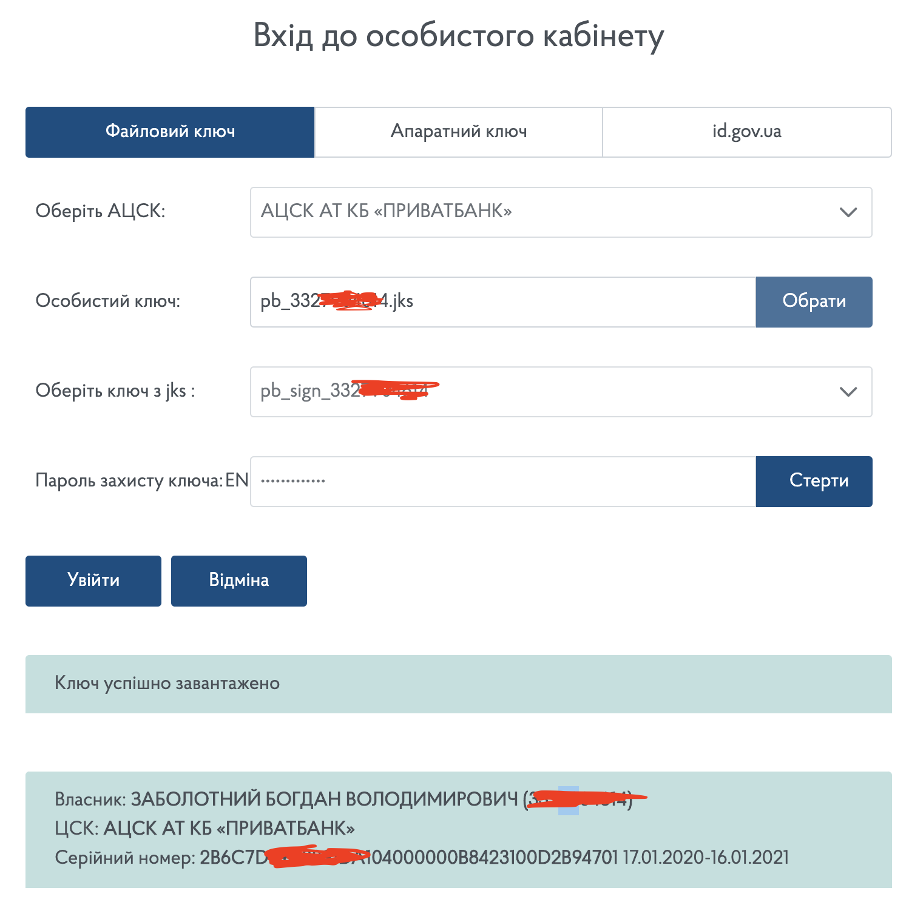
0. На нулевом этапе ФОП (ФЛП) должен получить ЭЦП для себя и
всех своих кассиров (если они имеются) или выступить в роли
кассира самостоятельно. Проще и быстрее всего это сделать в
Приват24 для физлиц, поскольку карты этго банка есть у
большинства граждан Украины.
1. Далее вам нужно зайти в
электронный кабинет налогоплательщика
на сайте ГНС (cabinet.tax.gov.ua). В списке выберите
организацию, где вы получили свою электронную подпись (в
данном случае Приватбанк), укажите путь расположения и введите
пароль от ЭЦП.
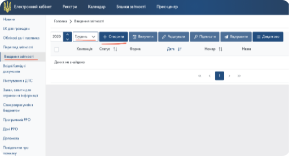
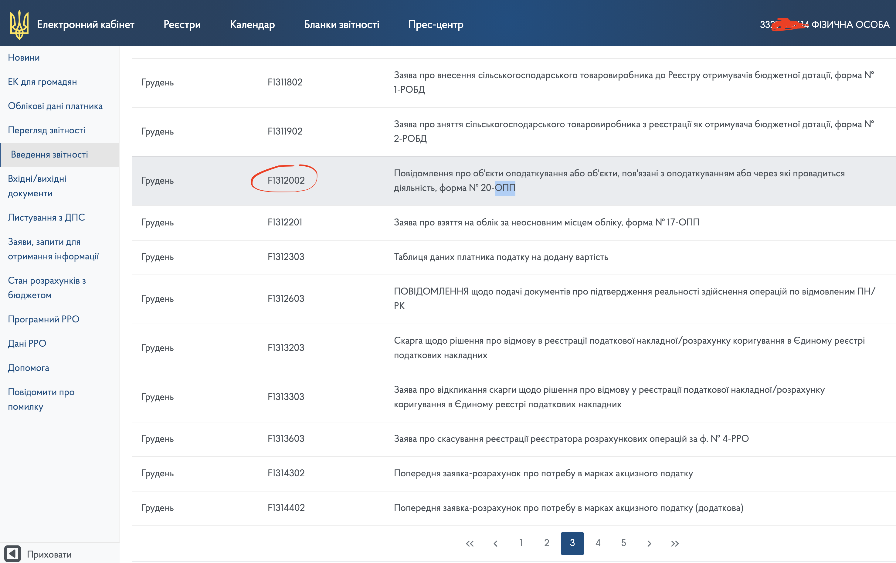
2. Зайдите во вкладку Введение отчётности, выберите актуальный
месяц и создайте новый отчет.
3. В первом отчете нужно проинформировать налоговую о месте,
где у вас будет стоять кассовый аппарат, подав Форму № 20-ОПП
(F1312002):
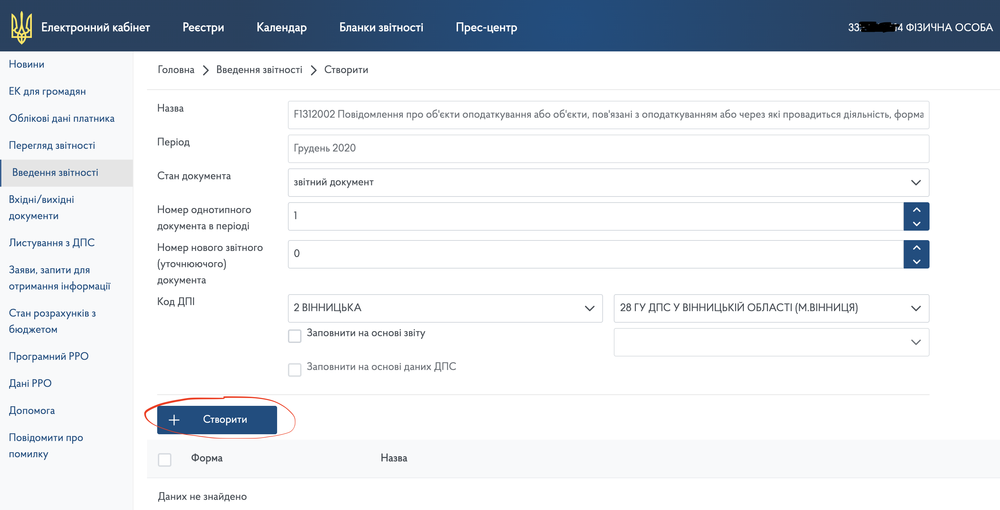
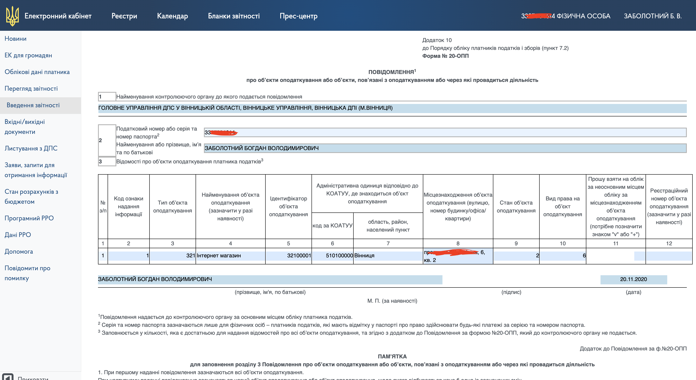
Далее заполняем электронную форму согласно примеру:
Тут все поля заполнятся автоматически, вам только необходимо
нажать «Создать»:
Для столбца 3 «Тип об’єкта оподаткування» необходимо
использовать
эту инструкцию.
Графы 6–7 «Адміністративна одиниця відповідно до КОАТУУ, де
знаходиться об’єкт оподаткування» заполняются согласно списку,
который доступен по
ссылке.
Далее вам нужно сохранить документ, нажав на соответствующий
значек .
После этого можно переходить к подписе и отправке Уведомления
на сервер налоговой:
Если вы все сделали правильно, ваша заявка будет отображаться
зеленым цветом и от налоговой прийдет 2 электронные квитанции.
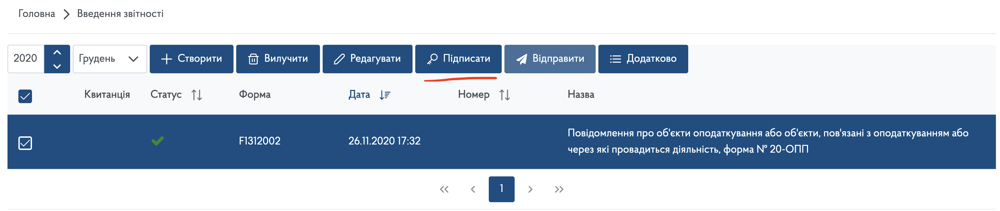
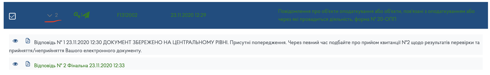
В случаи наличия ошибок, заявка будет отображаться красным
цветом:
Проверьте причину отказа в ответе от налоговой (нажав на
кнопку «Перегляд»), исправьте ошибки и подайте заявку
повторно:
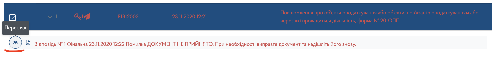
В данном случаи использовалась новая ЭЦП, поэтому пришлось
подождать 1 день, пока информация не обновилась на серверах:
Также напомним, что здесь и далее, если от налоговой приходит
отказ, то новую заявку можно создавать на основании старой и
не заполнять ее вручную с нуля. Для этого нужно поставить
галочку в соответствующем поле.
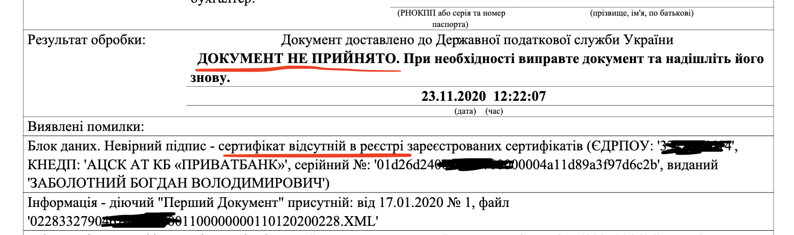
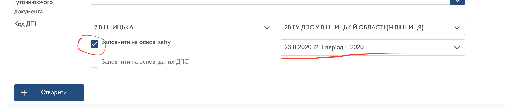
4. Далее переходим к «Заява про реєстрацiю програмного
реєстратора розрахункових операцiй (форма № 1-ПРРО)» или форма
F1316602:
Заполняем таблицу актуальными данными:
Информацию для заполнения полей рекомендуем брать со вкладки
«Облікові дані платника»
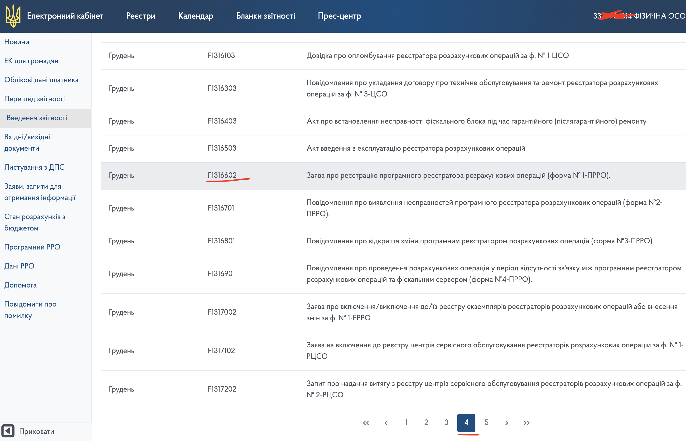
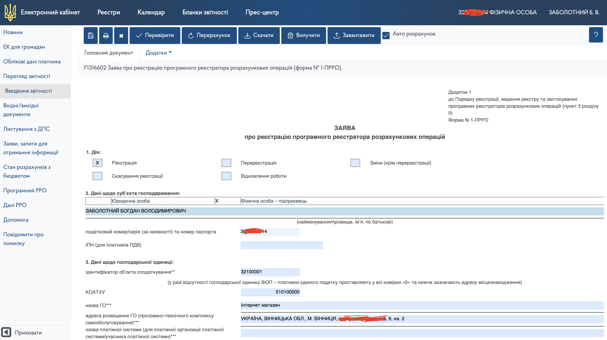
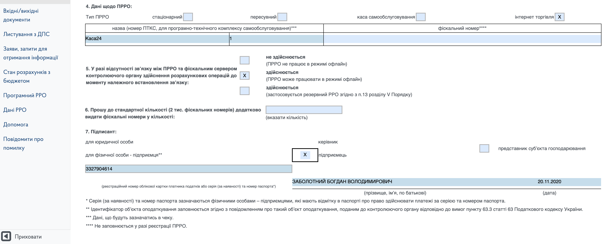
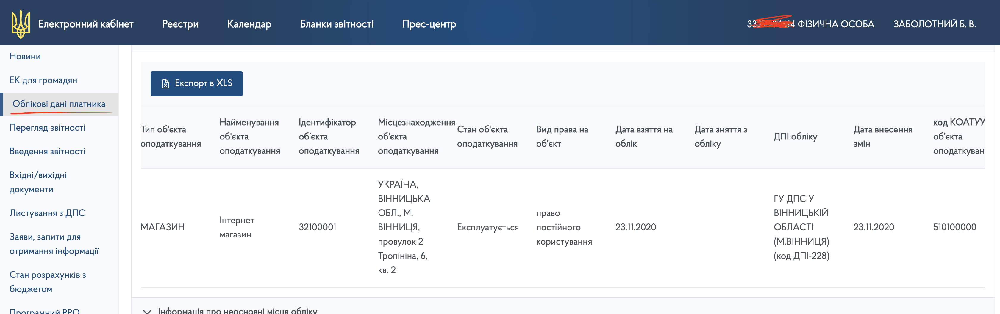
После заполнения Заявления его необходимо сохранить, подписать
ЭЦП и отправить в налоговую, аналогично с первым Уведомлением.
В ответ вы получите подтверждение с фискальным номером вашего
ПРРО.
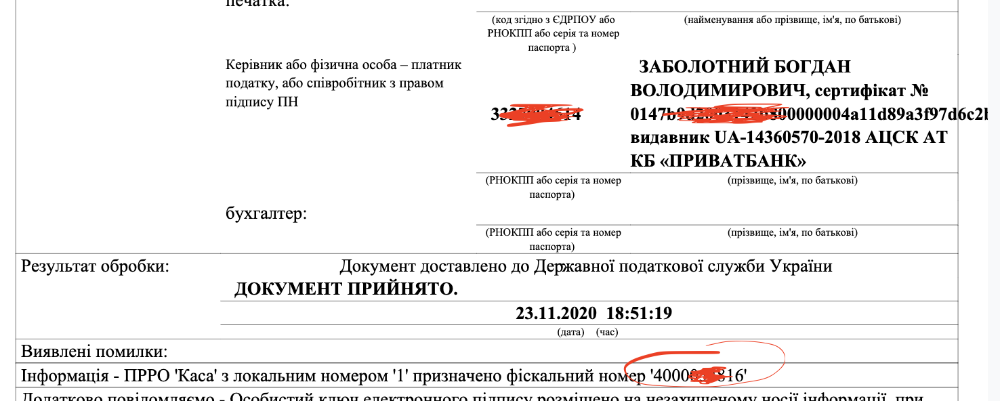
5. На следующем этапе вам необходимо сообщить налоговой о
кассирах и о том, какие именно ЭЦП они будут использовать.
Переходим к заполнению формы F1391801 «Повiдомлення про
надання iнформацiї щодо квалiфiкованого сертифiката вiдкритого
ключа»
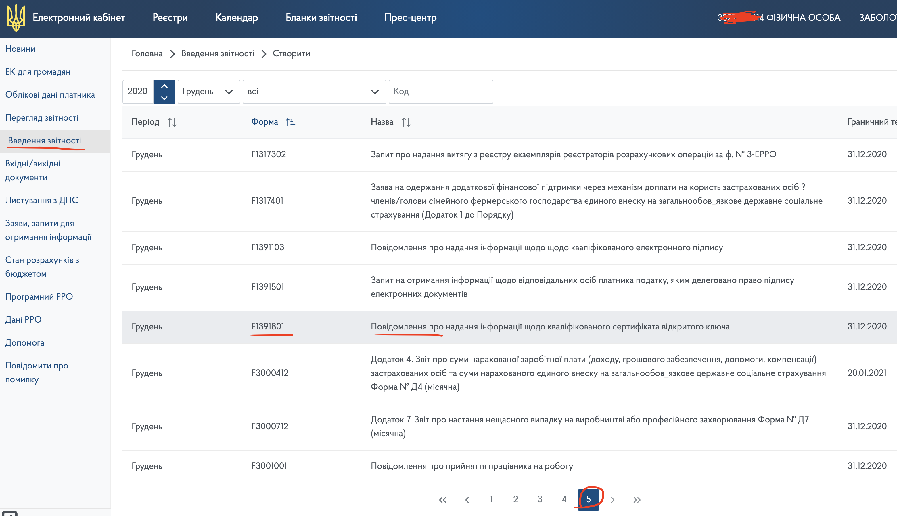
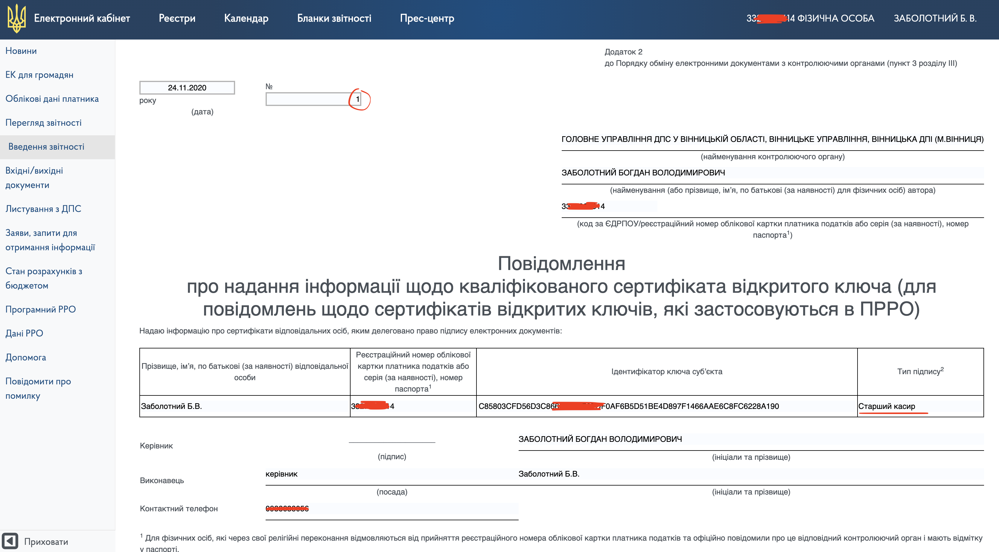
В поле номер вам необходимо ввести порядковый номер
Уведомления за сегодня. Далее вы заполняете информацию о ваших
кассирах. В случаи если вы как ФОП (ФЛП) работаете сами на
себя, то нужно добавить информацию о себе, как о кассире.
Для заполнения поля «Ідентифікатор ключа суб’єкта» вам
понадобится дополнительная информация.
Если вы используете ЭЦП от налоговой, тогда вам поможет
эта инструкция.
При работе с ЭЦП от Приватбанка вам необходимо перейти по
ссылке
acsk.privatbank.ua/certs, ввести свои идентификационный номер и найти информацию о
ваших актуальных цифровых подписях.
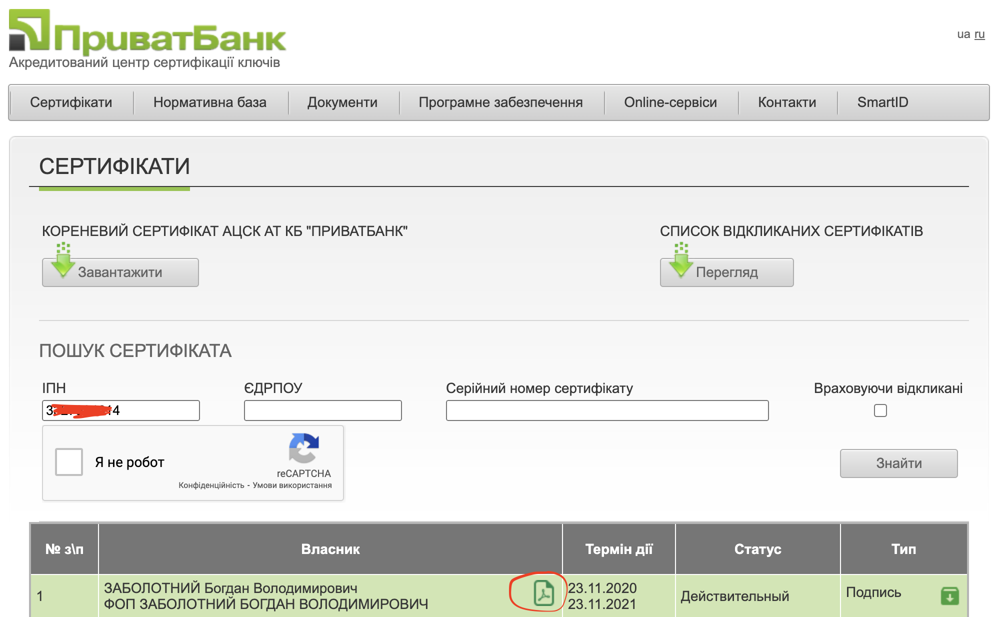
При нажатии на будет скачан
PDF файл, в котором и находится нужная информация:
Обратите внимание! Информация об идентификаторе может занимать
2 строчки в графе PDF файла и при копировании в форму на сайте
налоговой уже будет создана доп строка:
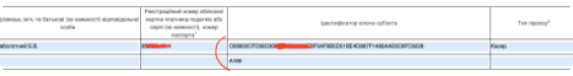
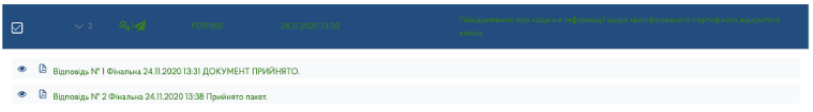
В таком случае нужно перенести все символы в одну строку, а
лишнюю удалить. В ответ вы получите 2 квитанции от налоговой,
после чего можно приступать к работе на вашем программном РРО,
используя зарегистрированные ЭЦП и информацию и них: